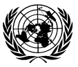

GitHub


Durée du voyage intersidéral
Résolutions de l'ONU en HTML
Bussard Ramjet
ELF : libelf examples
Code presentation : ctoohtml
|
Hosted by the courtesy of GitHub |
The stars ASAP
Durée du voyage intersidéral Résolutions de l'ONU en HTML Bussard Ramjet
|
DWARF : dwarf2xml
ELF : libelf examples Code presentation : ctoohtml |
| Up | Table des matières |
| Produit le : Mon Aug 29 23:09:01 2011, Par : machinman.net | Document complet |
|  |
Résolutions et décisions du Conseil de Sécurité 2004
Ce document n'est pas un texte officiel il fourni "comme il est", n'a aucune valeur légale et aucune garantie ne peut en être attendue. |
| |< | << | < | 256 | 257 | 258 | 259 | 260 | > | >> | >| |
Résolutions adoptées et décisions prises par le Conseil de sécurité du 1er août 2004 au 31 juillet 2005
|
Deuxième partie. |
Autres questions examinées par le Conseil de sécurité |
TRIBUNAL PÉNAL INTERNATIONAL CHARGÉ DE JUGER LES PERSONNES ACCUSÉES DE VIOLATIONS GRAVES DU DROIT INTERNATIONAL HUMANITAIRE COMMISES SUR LE TERRITOIRE DE L’EX-YOUGOSLAVIE DEPUIS 1991
TRIBUNAL PÉNAL INTERNATIONAL CHARGÉ DE JUGER LES PERSONNES ACCUSÉES D’ACTES DE GÉNOCIDE OU D’AUTRES VIOLATIONS GRAVES
DU DROIT INTERNATIONAL HUMANITAIRE COMMIS SUR LE TERRITOIRE DU RWANDA ET LES CITOYENS RWANDAIS ACCUSÉS DE TELS ACTES OU VIOLATIONS COMMIS SUR LE TERRITOIRE D’ÉTATS VOISINS ENTRE LE 1er JANVIER ET LE 31 DÉCEMBRE 1994358
Décisions
À sa 5016e séance, le 4 août 2004, le Conseil de sécurité a examiné la question intitulée :
« Tribunal pénal international chargé de juger les personnes accusées de violations graves du droit international humanitaire commises sur le territoire de l’ex-Yougoslavie depuis 1991
« Tribunal pénal international chargé de juger les personnes accusées d’actes de génocide ou d’autres violations graves du droit international humanitaire commis sur le territoire du Rwanda et les citoyens rwandais accusés de tels actes ou violations commis sur le territoire d’États voisins entre le 1er janvier et le 31 décembre 1994
« Lettre, en date du 21 mai 2004, adressée au Président du Conseil de sécurité par le Président du Tribunal pénal international chargé de juger les personnes accusées de violations graves du droit international humanitaire commises sur le territoire de l’ex-Yougoslavie depuis 1991 (S/2004/420)
« Lettre, en date du 30 avril 2004, adressée au Président du Conseil de sécurité par le Président du Tribunal pénal international chargé de juger les personnes accusées d’actes de génocide ou d’autres violations graves du droit international humanitaire commis sur le territoire du Rwanda et les citoyens rwandais accusés de tels actes ou violations commis sur le territoire d’États voisins entre le 1er janvier et le 31 décembre 1994 (S/2004/341) ».
À la même séance, à l’issue de consultations entre les membres du Conseil de sécurité, le Président a fait la déclaration suivante au nom du Conseil359 :
« Le Conseil de sécurité prend note de la lettre, en date du 21 mai 2004, adressée au Président du Conseil de sécurité par le Président du Tribunal pénal international chargé de juger les personnes accusées de violations graves du droit international humanitaire commises sur le territoire de l’ex-Yougoslavie depuis 1991360.
« Le Conseil prend également note de la lettre, en date du 30 avril 2004, adressée au Président du Conseil de sécurité par le Président du Tribunal pénal international chargé de juger les personnes accusées d’actes de génocide ou d’autres violations graves du droit international humanitaire commis sur le territoire du Rwanda et les citoyens rwandais accusés de tels actes ou violations commis sur le territoire d’États voisins entre le 1er janvier et le 31 décembre 1994361.
358 Le Conseil de sécurité a adopté, chaque année depuis 1999, des résolutions et décisions sur cette question. 359 S/PRST/2004/28. 360 S/2004/420. 361 S/2004/341.
250
| |< | << | < | 256 | 257 | 258 | 259 | 260 | > | >> | >| |
|
Hosted by the courtesy of GitHub |
The stars ASAP
Durée du voyage intersidéral Résolutions de l'ONU en HTML Bussard Ramjet
|
DWARF : dwarf2xml
ELF : libelf examples Code presentation : ctoohtml |